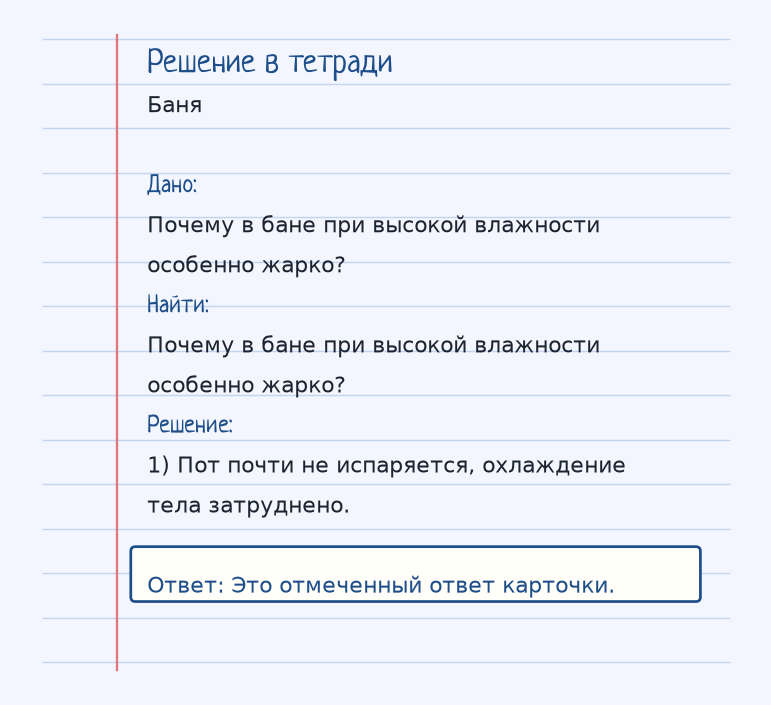
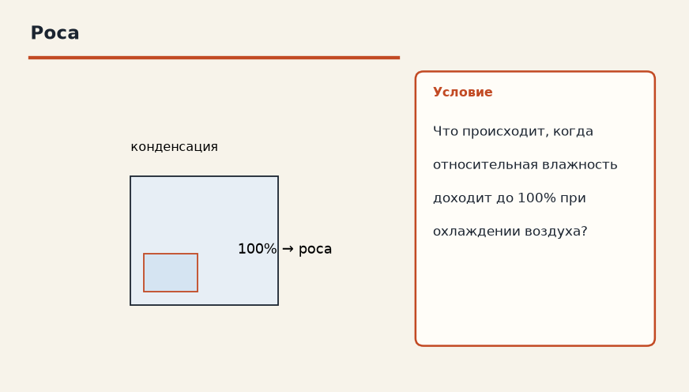
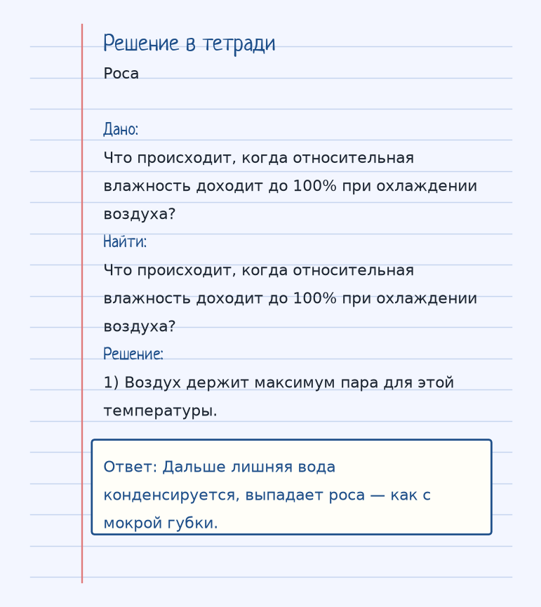

Тема «Влажность воздуха»: физический смысл, единицы величин, типичные ошибки и два разобранных примера.
Схема к условию.
Физический смысл
Количество водяного пара в воздухе. Абсолютная влажность — сколько грамм воды в 1 м³ воздуха. Относительная влажность — сколько процентов пар от максимально возможного при данной температуре.
Влажность говорит, сколько в воздухе водяного пара. Абсолютная — это граммы воды в одном кубометре. Относительная — сколько это составляет от максимума, который воздух ещё согласен держать при данной температуре, в процентах.
Максимум зависит от температуры: тёплый воздух «вмещает» больше пара, чем холодный. Поэтому 50% при жаре и 50% в прохладе — разное количество граммов.
Губка из аналогии: сухая — 0%, чуть влажная — середина шкалы, насквозь мокрая — 100%, дальше капли уже не впитываются, выпадает роса. В бане относительная влажность высока, пот почти не испаряется, и тело не охлаждается испарением. Оттого кажется особенно жарко.
Формула и единицы
Абсолютная влажность — г/м³. Относительная — процент от максимума при этой температуре.
Пояснение
Губка. Может быть сухой (0%), влажной (50%) или полностью мокрой (100% — выпадает роса).
Губка: сухая 0%, влажная 50%, мокрая насквозь 100% — дальше вода уже не держится, как роса.
Типичные ошибки
Не путай абсолютную и относительную. Высокий процент не всегда означает много граммов: смотри ещё на температуру. И в бане жарко не потому, что пот «испаряется быстрее».
Разобранные примеры. Решение каждого открывается отдельно.
Разбор 1
Баня
Почему в бане при высокой влажности особенно жарко?
На схеме только условие.
Порядок записи: данные, единицы СИ, искомая величина, ход решения, ответ.
Дано. Почему в бане при высокой влажности особенно жарко?
В СИ.
Найти. Почему в бане при высокой влажности особенно жарко?
Решение.
Пот почти не испаряется, охлаждение тела затруднено.
Это отмеченный ответ карточки.

Разбор 2
Роса
Что происходит, когда относительная влажность доходит до 100% при охлаждении воздуха?

На схеме только условие.
Порядок записи: данные, единицы СИ, искомая величина, ход решения, ответ.
Дано. Что происходит, когда относительная влажность доходит до 100% при охлаждении воздуха?
В СИ.
Найти. Что происходит, когда относительная влажность доходит до 100% при охлаждении воздуха?
Решение.
Воздух держит максимум пара для этой температуры.
Дальше лишняя вода конденсируется, выпадает роса — как с мокрой губки.

Разбор 3
Абсолютная
Что называют абсолютной влажностью?
На схеме только условие.
Порядок записи: данные, единицы СИ, искомая величина, ход решения, ответ.
Дано. Водяной пар в воздухе
В СИ.
Числового перевода нет.
Найти. Определение
Решение.
Это масса водяного пара в 1 м³ воздуха.
Масса пара в 1 м³.
Разбор 4
Относительная
Что показывает относительная влажность?
На схеме только условие.
Порядок записи: данные, единицы СИ, искомая величина, ход решения, ответ.
Дано. Сравнение с насыщенным паром при той же температуре
В СИ.
Числового перевода нет.
Найти. Определение
Решение.
Это отношение фактической абсолютной влажности к максимальной при данной температуре, в процентах.
Процент от максимума при этой температуре.
Разбор 5
Роса
Что происходит, если воздух с относительной влажностью 100% охлаждают?
На схеме только условие.
Порядок записи: данные, единицы СИ, искомая величина, ход решения, ответ.
Дано. Пар был насыщенным
В СИ.
Числового перевода нет.
Найти. Явление
Решение.
Избыток пара конденсируется, выпадает роса.
Выпадает роса.
Разбор 6
Баня
Почему при высокой влажности жара переносится тяжелее?
На схеме только условие.
Порядок записи: данные, единицы СИ, искомая величина, ход решения, ответ.